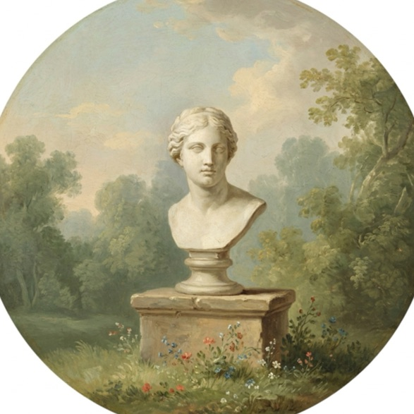
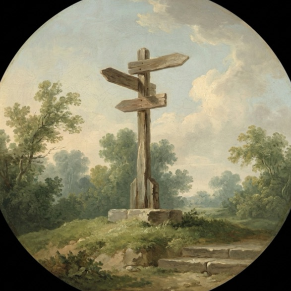
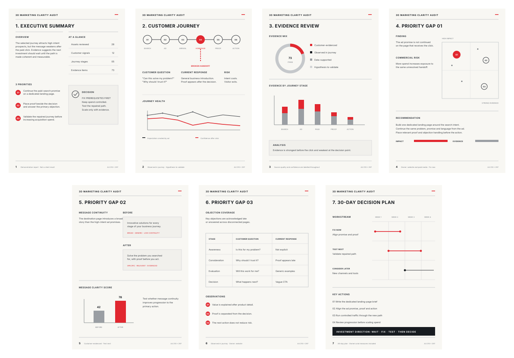

The 3D Marketing Clarity Audit
Your website, content, email, ads and freelancers may all be active. But activity does not mean your marketing is working together to move customers towards a sale.
The 3D Marketing Clarity Audit maps one priority customer path across your marketing, diagnoses where that path is losing clarity, trust or momentum, and gives you a practical 30-day action plan for what to fix next.
We will use the call to understand your business, current marketing setup and the customer path that matters most right now.
What is actually wrong
You need to know what is actually getting in the way.
Maybe you are:
Each part of your marketing can look reasonable on its own. The problem often appears in the connection between them.
So when results are disappointing, the answer often becomes more content, more traffic, a new website or another specialist.
But adding more activity will not fix a customer path that is already losing momentum.
The focus
The audit focuses on one priority customer path connected to one core offer and one conversion goal. For example:
The exact path depends on how your business currently attracts and converts customers.
The purpose is not to audit every marketing channel you own. It is to understand whether the touchpoints that matter are working together to help the customer progress.
The method

First, I build a working picture of the customer and the decision they are trying to make. I review the evidence you already have to understand:
This may include customer reviews, FAQs, sales insights, existing feedback, marketing materials and available business data.
Where something is supported by evidence, I will say so. Where something is still an assumption, I will make that visible too.
Next, I map the selected customer path across your marketing and look for the places where momentum may be weakening. Depending on your business, I may review your website, landing pages, social content, email, paid advertising, product or service pages, enquiry or booking flows, and checkout or conversion steps.
I look for issues such as:

Finally, I turn the diagnosis into a practical 30-day action plan.
You will know what needs attention, what should happen first, who should own it and how to measure whether the change helped.
The action plan
This is where the diagnosis becomes something your team can use. For each recommended action, you will see:
The sequence
Your recommendations are organised into a practical sequence.
Address the issues most likely to weaken everything that follows. This could include unclear messaging, broken page hierarchy, missing proof, weak calls to action or an important disconnect between channels.
Improve the key messages, handoffs and decision points customers encounter as they move towards conversion.
Implement focused tests, monitor relevant behaviour and decide what deserves further investment.
This is what we are fixing this month. This is why. This is who owns it. And this is how we will know whether it helped.
The goal is for your team to be able to say that out loud.
What you receive
A visual map showing how the selected customer currently moves through your marketing towards the conversion goal. Where they enter, what message they encounter, what they are expected to understand, what they are asked to do, where they go next, and where the path becomes unclear, inconsistent or unnecessarily difficult.
A focused assessment of the most important issues affecting the selected path. The diagnosis connects what I observe with why it matters and what should happen next.
A practical implementation plan showing what to fix, why it matters, what happens first, who should own it, expected effort, what can wait, and how progress should be measured.
Everything is delivered in a concise 6 to 10-page PDF report designed to be used, not filed away. You can hand it to your team, agency, freelancer, copywriter, designer or developer so they know what needs to happen next.

Designed to be used, not filed away.
Demonstration report. Every number on these pages is illustrative, not a client result.
Illustrative example
Your Instagram ads position your product around saving customers time. The landing page then opens with a broad list of features. The strongest customer review supporting the time-saving benefit appears much further down the page. The main button says "Learn more".
None of those elements looks disastrous by itself. Together, they create a weaker path.
Illustrative example
The same finding, walked from the ad that earns the click to the 30 days that follow.
The level of direction
That is the level of direction the audit is designed to provide. Not simply "improve your website".
The process
Book a 30-minute clarity call. We discuss:
The purpose of this conversation is to understand your situation and determine whether the audit is the right fit.
Submit the relevant evidence. If we decide to proceed, you complete a structured intake and provide the materials relevant to the path being audited. These may include website links, selected social content, email sequences, advertisements and landing pages, customer reviews and feedback, FAQs or sales insights, and relevant analytics, funnel or CRM screenshots.
You do not need to give me unrestricted access to every marketing platform you use. I will identify the evidence that is useful for the customer path we are diagnosing.
I map and diagnose the path. I review the evidence, map the current journey and assess how well the selected touchpoints work together. If something important is unclear, I will contact you rather than fill the gap with assumptions.
Receive your diagnosis and action plan. Within 14 business days of receiving the required materials, you receive your Customer Path Map, Marketing Diagnosis and 30-Day Action Plan inside your visual decision brief.
We then have a 30-minute findings call to walk through the diagnosis, recommendations and order of implementation.
The independence
Your customer does not experience those channels separately. They experience one business.
The 3D Marketing Clarity Audit looks at how those activities connect, where the customer experience becomes weaker and what needs attention before more money is committed.
I am not using the audit to sell you advertising management, a website rebuild, content creation or ongoing implementation. The recommendation may be to invest more. It may also be to fix something you already have first.
The fit
Investment
Your audit includes:
You do not need another list of marketing tactics. You need to see what your customer is experiencing, where the path becomes weaker and what your team should do about it.
Map the path. Diagnose the gaps. Fix the journey. Then decide what deserves more investment.
AUD $2,000 · Delivered within 14 business days